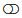
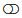

Categorical Filters¶
Initially, all filter buttons are on (visible values are colored blue), as shown below. So all values are visible the first time that a filter is instantiated. Clicking a blue button sets its state to off, colors the button gray (hidden values are colored gray), hides points with that value in the scatterplot, and grays/fades the corresponding rows in the table. Buttons are toggles, so clicking the button again restores that value’s point visibility in the plot and re-colors those rows in the table.

All filter values are initially visible the first time a filter is instantiated.¶
In addition to individual buttons, group operations are also available through the three icons  at the bottom of
the filter. Use
at the bottom of
the filter. Use  to turn all buttons on,  to turn all buttons off, and
to turn all buttons on,  to turn all buttons off, and  to flip the states
of all buttons. As an example of using group operations, imagine that you wanted to see only cars with 5-cylinder engines.
You could turn all buttons off with , then click button 5 to show just those points. This would be faster than
individually turning off the 3, 4, 6, and 8-cylinder buttons.
to flip the states
of all buttons. As an example of using group operations, imagine that you wanted to see only cars with 5-cylinder engines.
You could turn all buttons off with , then click button 5 to show just those points. This would be faster than
individually turning off the 3, 4, 6, and 8-cylinder buttons.
For categorical filters, sometimes the width of the button label exceeds the width of the button. To expand the filter width,
click the  icon in the upper right corner of the filter. This will widen the filter and replace the
icon with the
icon in the upper right corner of the filter. This will widen the filter and replace the
icon with the  icon. To collapse the filter back to its original width, click the icon.
icon. To collapse the filter back to its original width, click the icon.